NAIVE BAYES CLASSIFIER
Dapat dihitung mengunakan rumus :
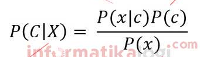
dengan :
P(c|x) : posterior
P(x|c) : likelihood
P(c) : prior
P(x) : eviden
Kita akan mencoba menyelesaikan dengan menggunakan ms. Excel. Berikut datanya :
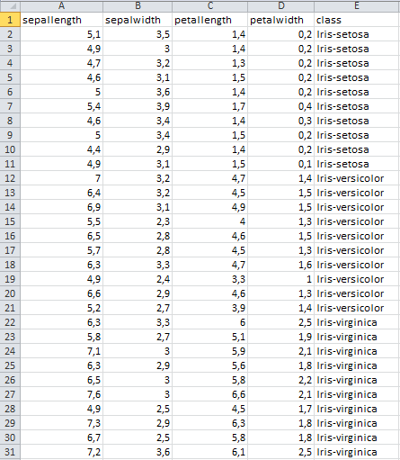
terdapat 30 data dengan 3 class yaitu iris-setosa, iris-versicolor dan iris-virginica. Agar lebih mudah, kita permisalkan lalu mencari probabilitas nya, seperti ini
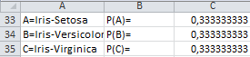
Mencari probabilitas itu, banyaknya class iris-setosa dibagi keseluruhan. Jadi semuanya sama 10 / 30.
Setelah itu kita perlu mencari rata-rata dan standar deviasi dari masig-masing class.
Rata-rata 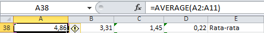
Standar Deviasi 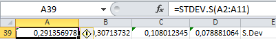
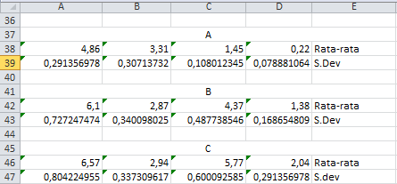
Setelah itu kita gunakan rumus Densitas Gauss untuk menghitung tiap fiturnya
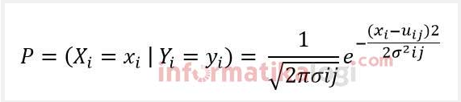
Kita contohkan untuk yang iris-setosa saja.

A39 adalah standar deviasi dari class A, A38 adalah rata-rata dari class A
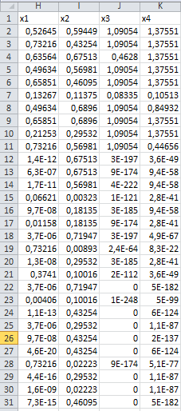
Lalu kita menghitung P(x|A) dengan rumus
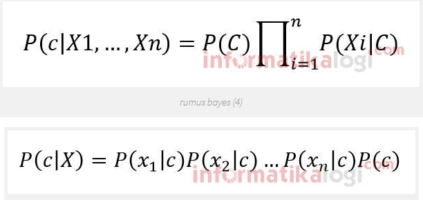
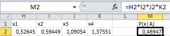
Selanjutnya menghitung untuk P(A|x) dengan mengalikan P(x|A) dan probabilitas dari class A
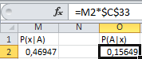
Lakukan cara yang sama pada class B dan C. Lalu Bandingkan P(A|x), P(B|x) dan P(C|x). Semisal ketika data 1 dibandingkan lebih besar P(A|x), berarti data 1 di prediksi class A.
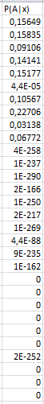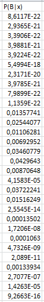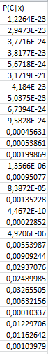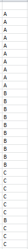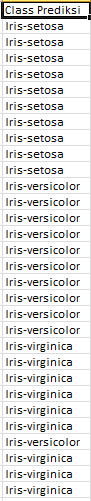
Nah begitulah memprediksi suatu class dengan metode Naive Bayes Classifier.